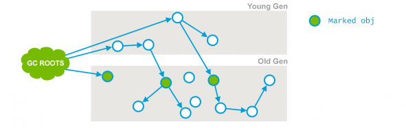
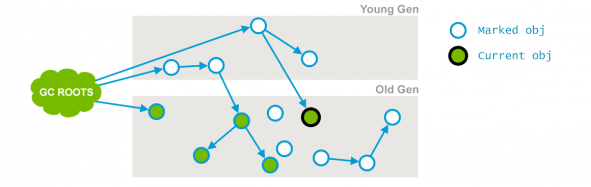
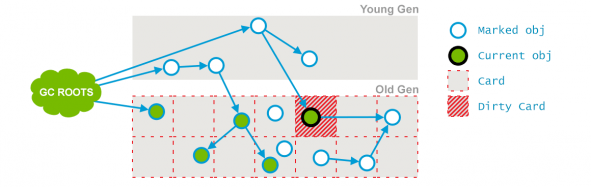
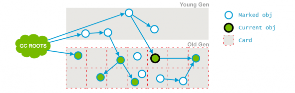
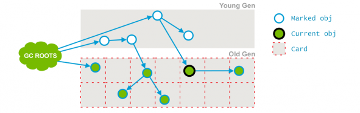

什么是CMS？
Concurrent Mark Sweep。
看名字就知道，CMS是一款并发、使用标记-清除算法的gc。
CMS是针对老年代进行回收的GC。
CMS有什么用？
CMS以获取最小停顿时间为目的。
在一些对响应时间有很高要求的应用或网站中，用户程序不能有长时间的停顿，CMS 可以用于此场景。
CMS收集器的主要设计目标是：低应用停顿时间。它通过两种方式实现这一目标：
不压缩老年代，而是使用空闲列表来管理回收空间。
大部分标记清理工作与应用程序并发执行。
主要问题：由于不压缩带来的老年代堆碎片，或者在对象分配率高的情况下，都可能导致Full GC。
CMS如何执行？
CMS收集器的GC周期主要由7个阶段组成，其中有两个阶段会发生stop-the-world，其他阶段都是并发执行的。（亦有4个阶段、6个阶段等说法）
Phase 1: Initial Mark（初始化标记）
初始化标记阶段，是CMS GC的第一个阶段，也是标记阶段的开始。主要工作是标记可直达的存活对象。
主要标记过程
- 从GC Roots遍历可直达的老年代对象；
- 遍历被新生代存活对象所引用的老年代对象。
程序执行情况
- 支持单线程或并行标记。
- 发生stop-the-world，暂停所有应用线程。

（Marked obj：老年代绿色圆点表示被初始化标记的对象。）
Phase 2: Concurrent Mark（并发标记）
并发标记阶段，是CMS GC的第二个阶段。
在该阶段，GC线程和应用线程将并发执行。也就是说，在第一个阶段（Initial Mark）被暂停的应用线程将恢复运行。
并发标记阶段的主要工作是，通过遍历第一个阶段（Initial Mark）标记出来的存活对象，继续递归遍历老年代，并标记可直接或间接到达的所有老年代存活对象。

（Current obj：该对象的引用关系发生变化，对下一个对象的引用被删除。）
由于在并发标记阶段，应用线程和GC线程是并发执行的，因此可能产生新的对象或对象关系发生变化，例如：
- 新生代的对象晋升到老年代；
- 直接在老年代分配对象；
- 老年代对象的引用关系发生变更；
- 等等。
对于这些对象，需要重新标记以防止被遗漏。为了提高重新标记的效率，本阶段会把这些发生变化的对象所在的Card标识为Dirty，这样后续就只需要扫描这些Dirty Card的对象，从而避免扫描整个老年代。
Phase 3: Concurrent Preclean（并发预清理）
在并发预清洗阶段，将会重新扫描前一个阶段标记的Dirty对象，并标记被Dirty对象直接或间接引用的对象，然后清除Card标识。
标记被Dirty对象直接或间接引用的对象：

清除Dirty对象的Card标识：

Phase 4: Concurrent Abortable Preclean（可中止的并发预清理）
本阶段尽可能承担更多的并发预处理工作，从而减轻在Final Remark阶段的stop-the-world。
在该阶段，主要循环的做两件事：
- 处理 From 和 To 区的对象，标记可达的老年代对象；
- 和上一个阶段一样，扫描处理Dirty Card中的对象。
具体执行多久，取决于许多因素，满足其中一个条件将会中止运行：
- 执行循环次数达到了阈值；
- 执行时间达到了阈值；
- 新生代Eden区的内存使用率达到了阈值。
Phase 5: Final Remark（重新标记）
预清理阶段也是并发执行的，并不一定是所有存活对象都会被标记，因为在并发标记的过程中对象及其引用关系还在不断变化中。
因此，需要有一个stop-the-world的阶段来完成最后的标记工作，这就是重新标记阶段（CMS标记阶段的最后一个阶段）。主要目的是重新扫描之前并发处理阶段的所有残留更新对象。
主要工作：
- 遍历新生代对象，重新标记；（新生代会被分块，多线程扫描）
- 根据GC Roots，重新标记；
- 遍历老年代的Dirty Card，重新标记。这里的Dirty Card，大部分已经在Preclean阶段被处理过了。
Phase 6: Concurrent Sweep（并发清理）
并发清理阶段，主要工作是清理所有未被标记的死亡对象，回收被占用的空间。

Phase 7: Concurrent Reset（并发重置）
并发重置阶段，将清理并恢复在CMS GC过程中的各种状态，重新初始化CMS相关数据结构，为下一个垃圾收集周期做好准备。
CMS有什么问题？
CMS这三个字母就隐含了问题所在。并发+标记-清除算法 是问题的来源。
并发
并发意味着多线程抢占CPU资源，即GC线程与用户线程抢占CPU。这可能会造成用户线程执行效率下降。
CMS默认的回收线程数是(CPU个数+3)/4。这个公式的意思是当CPU大于4个时,保证回收线程占用至少25%的CPU资源，这样用户线程占用75%的CPU，这是可以接受的。
但是，如果CPU资源很少，比如只有两个的时候怎么办？按照上面的公式，CMS会启动1个GC线程。相当于GC线程占用了50%的CPU资源，这就可能导致用户程序的执行速度忽然降低了50%，50%已经是很明显的降低了。
这种场景怎么处理呢？
我给的答案是可以不用考虑这种场景。现在的PC机中都至少有双核处理器，更别说大型的服务器了。
CMS的解决方案是提供了一个 incremental mode（增量模式）。
在这种模式下，进行并发标记、清理时让GC线程、用户线程交替运行，尽量减少GC线程独占CPU资源的时间。
这会造成GC时间更长，但对用户线程造成的影响就会少一些。
但实践证明，这种模式下CMS的表现很一般，并没有什么大的优化。
i-CMS已经被声明为“deprecated”，不再提倡使用。
浮动垃圾
并发清理阶段用户线程还在运行，这段时间就可能产生新的垃圾，新的垃圾在此次GC无法清除，只能等到下次清理。这些垃圾有个专业名词：浮动垃圾。
由于垃圾回收阶段用户线程仍在执行，必需预留出内存空间给用户线程使用。因此不能像其他回收器那样，等到老年代满了再进行GC。
CMS 提供了CMSInitiatingOccupancyFraction参数来设置老年代空间使用百分比,达到百分比就进行垃圾回收。
这个参数默认是92%，参数选择需要看具体的应用场景。
设置的太小会导致频繁的CMS GC，产生大量的停顿；反过来想，设置的太高会发生什么？
假设现在设置为99%，还剩1%的空间可以使用。
在并发清理阶段，若用户线程需要使用的空间大于1%，就会产生Concurrent Mode Failure错误，意思就是说并发模式失败。
这时，虚拟机就会启动备案：使用Serial Old收集器重新对老年代进行垃圾回收.如此一来，停顿时间变得更长。
所以CMSInitiatingOccupancyFraction的设置要具体问题具体分析。
网上有一些设置此参数的公式，个人认为不是很严谨(原因就是CMS另外一个问题导致的),因此不写出来以免大家疑惑。
其实CMS有动态检查机制。
CMS会根据历史记录，预测老年代还需要多久填满及进行一次回收所需要的时间。
在老年代空间用完之前，CMS可以根据自己的预测自动执行垃圾回收。
这个特性可以使用参数UseCMSInitiatingOccupancyOnly来关闭。
这里提个问题给读者思考，如果让你设计，如何预测什么时候开始自动执行？
内存碎片
前两个问题是由并发引起的，接下来要说的问题就是由标记-清除算法引起的。
使用标记-清除算法可能造成大量的空间碎片。空间碎片过多，就会给大对象分配带来麻烦。
往往老年代还有很大剩余空间，但无法找到足够大的连续空间来分配当前对象,不得不触发一次Full GC。
CMS的解决方案是使用UseCMSCompactAtFullCollection参数(默认开启)，在顶不住要进行Full GC时开启内存碎片整理。
这个过程需要STW，碎片问题解决了,但停顿时间又变长了。
虚拟机还提供了另外一个参数CMSFullGCsBeforeCompaction，用于设置执行多少次不压缩的Full GC后，跟着来一次带压缩的（默认为0，每次进入Full GC时都进行碎片整理）。
延伸一个“foreground collector”的东西给大家，这个玩意在Java8中也声明为deprecated。(https://bugs.openjdk.java.net/browse/JDK-8027132)